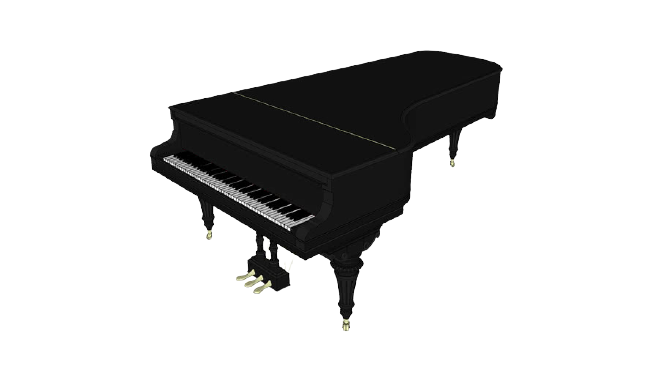
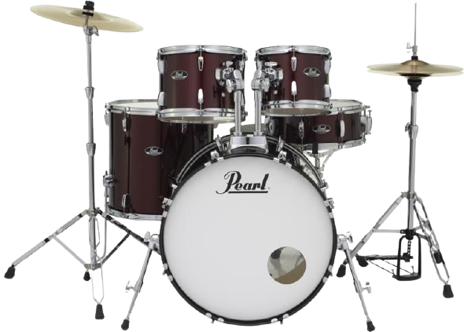

How to make music ?
Music is the art of arranging sounds in time through the elements of melody, harmony, rhythm and timbre. All those terms are really important to have a good song, they have some specific rules to respect if you dont wnat your song sounds like a pan's concert. That is what we will see in this page. Take music as a dish, making it is as easy as a recipe.
- The note
- The Rhythm
- The lyrics
- The End !!!
- Top 10 songs
Evererybody know them. Their name depends from the country. The latin countries use Do or Ut, Ré, Mi, Fa, Sol, La and Si. Where the english-speaking countries as the United States of America or the United Kingdom use letters. Each note correspond to a certain resonant frequency. The La 440 or A 440 is used since many years as a reference, because it is the note of playing an empty violin cord. It has became a reference because it can be played by almost all the instruments. We can see examples on the music sheets on the left.
| Frequency(Hz) | 440 | 466.16-493.88 | 523.25-554.37 | 587.33 | 622.25-659.26 | 698.46-739.99 | 783.99 |
|---|---|---|---|---|---|---|---|
| English-speaking | A | B | C | D | E | F | G |
| Latin country | La | Si | Do | Ré | Mi | Fa | Sol |
A rhythm is very important, it's like the skeleton of a music. It's quite simple. As you read this, you're using a certain rhythm of lecture. Here is an example of a drum rhythm.
The main instrument for this part is drums. it's litteraly only different simple sound that you can resume with "boum", "tic", "tac", "splash" put one after one or two at the same time to produce something. Try to guess which one it is on the pictures on the right. Clue : it's a set of drums.
We have notes and rhythm, let's make a melody.
For the lyrics it's easy and hard in the same time. You have to find a topic, something to talk about, or a subject that you like. Something that is important for you, and just try to talk with your heart. Okay, now write it and you'll have your background. Now you need a topline. A topline is a melody that you sing but with simple sounds. After that, you just need to adapt your voice to the melody and try to do beautiful phrases.
Let's hear that !!
Now that you have the basics, I encourage you to go to listen to good music. Here is a liste of good songs that I'm sure you will love. Have fun and enjoy your life with music!
This is a non-exhaustive list
